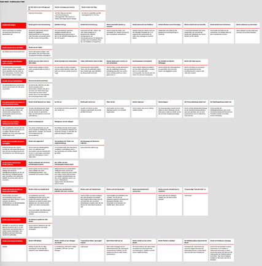

Story structure menu
Story structure elements operation
Insert Stage
Insert a stage between the sections
With Story structure > Insert Stage, you can insert a stage after the selected chapter or section.
Hint
By default, the new stage is on the second level. You can change the level to first (see below).
Change Level
Change the level of the selected stages
With Story structure > Change Level, you can change the level of the selected stages.
1st Level is displayed in bold face.
2nd Level is displayed in regular font.
Note
The stage level is only for visual distinction. It has no influence on the program functions.
Export story structure description for editing
Export an ODT document that can be imported again after editing
With Story structure > Export story structure description for editing,
you can create a text document that contains
all stages, each with description.
File name suffix is _structure_tmp.
Hint
This is also a full synopsis, with the emphasis on the dramaturgical structure.
Stages can neither be rearranged nor deleted.
With Writer, you can create stages by inserting headings within the description area:
Heading 1 → New first-level stage.
Heading 2 → New second-level stage.
Important
Documents with new stages are automatically discarded after the novelibre project is updated.
Show story structure board in browser
Show an HTML report with section cards arranged by stages
With Story structure > Show story structure board in browser you can create a HTML file that contains a board with “index cards” for the stages and all used sections. The index cards contain the title and the description of the corresponding element. The stage cards are arranged in the first column. Each stage card opens a row containing the cards of the assigned sections.

Note
The report is a temporary file, auto-deleted on program exit. If needed, you can have your web browser save or print it.